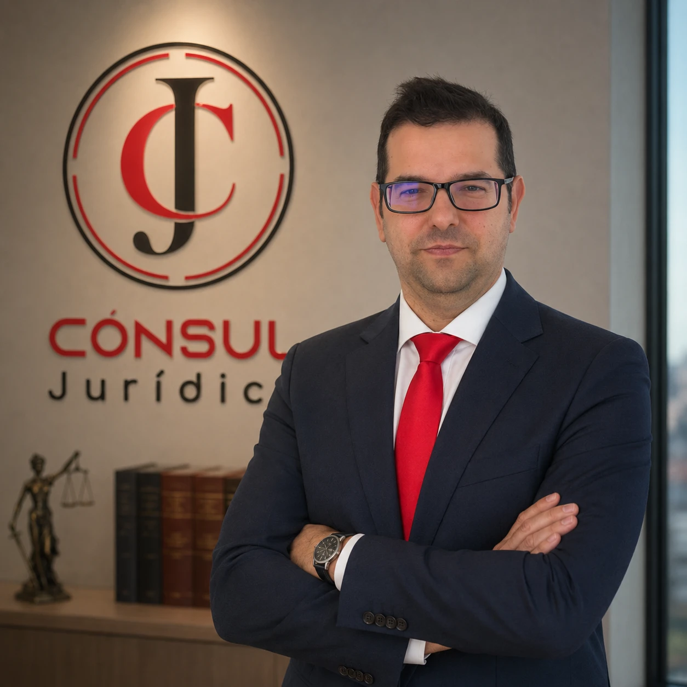

18 de junio de 2026
Ley de Segunda Oportunidad: cómo cancelar tus deudas
Quién puede acogerse, qué requisitos exige la ley y cuáles son los pasos para conseguir la exoneración de tus deudas y empezar de cero.
Leer más →Cercanía, comprensión y profesionalidad
en cada caso.
En Cónsul Jurídico acompañamos a personas, familias y empresas en los momentos más decisivos: regularizar tu situación, recuperar la estabilidad económica o proteger tu negocio. Escuchamos primero, actuamos después.

"Ad Auxilium vocatus — vocación de ayuda al prójimo." Iván Cónsul Gómez · Abogado y Gestor Administrativo · Consulta online en cualquier parte del mundo · Te atendemos estés donde estés ·
Tratamos cada caso como si fuera el único. Siempre accesibles, siempre disponibles.
Te decimos la verdad desde el primer momento, aunque no sea lo que esperabas escuchar.
Años de experiencia en Extranjería, Mercantil, Laboral y Derecho de Familia.
Te mantenemos informado en cada paso. Sin tecnicismos, sin esperas innecesarias.
Extranjería, Mercantil, Laboral y Familia — las cuatro áreas donde más ayudamos a personas, autónomos y empresas. Primera consulta siempre gratuita y sin compromiso. Atención presencial en Fraga y online para clientes en cualquier parte del mundo.
Acompañamos a las personas en todo el proceso para obtener su nacionalidad española. Asimismo, gestionamos la obtención de residencia o estancia y la emigración regularizada de personas.
Asesoramiento legal para sociedades y trabajadores autónomos. Especialistas en derecho concursal y de Segunda Oportunidad para personas y empresas que necesitan recuperar la estabilidad económica.
Asistimos a las personas trabajadoras en cuestiones relacionadas con su vida laboral. Orientamos a las empresas para lograr un clima laboral óptimo con mediación, conciliación y resolución de conflictos.
Conducimos a las personas en los momentos más importantes y complejos con cercanía, claridad y rigor jurídico. Protegemos lo que más importa con discreción y respeto.
Autónomo con deudas acumuladas frente a varios acreedores. Tramitamos el Beneficio de Exoneración del Pasivo Insatisfecho (BEPI) y el juzgado acordó la cancelación de la deuda pendiente, permitiéndole empezar de nuevo.
Persona en situación irregular tras una primera denegación. Reunimos la documentación, acreditamos el arraigo y la integración, y conseguimos la autorización de residencia que le permite vivir y trabajar con plenas garantías.
Trabajador despedido sin causa justificada. Impugnamos el despido y se reconoció su improcedencia, con la indemnización y las cantidades adeudadas que legalmente le correspondían.
Casos reales de clientes. Los testimonios en vídeo se publican con la autorización expresa del cliente; el resto se muestran anonimizados para proteger su privacidad. Los resultados son orientativos: cada asunto depende de sus circunstancias concretas.
"Un buen abogado no solo conoce la ley. Escucha, comprende y actúa pensando siempre en el bienestar de quien confía en él."
Iván Cónsul Gómez es Abogado y Gestor Administrativo con despacho en Fraga. Especializado en Extranjería y Nacionalidad, Derecho Mercantil y Segunda Oportunidad, ha acompañado a cientos de personas, familias y empresas a resolver situaciones complejas con rigor, honestidad y un trato verdaderamente cercano.
Su filosofía es sencilla: antes de actuar, escuchar. Antes de prometer, analizar. Y siempre, resultados por delante.
Gratuita y sin compromiso. Analizamos tu situación y te explicamos las opciones reales que tienes. Presencial u online.
Revisamos toda la documentación y diseñamos la estrategia más sólida para tu expediente.
Nos encargamos de todos los trámites, plazos y comunicaciones. Tú confías, nosotros actuamos.
Te informamos de cada avance y te acompañamos hasta la resolución definitiva de tu caso.
Consulta el estado de tu caso, los documentos y tus próximas citas desde cualquier lugar. Tu abogado te facilita un acceso privado y seguro, sin contraseñas que recordar. Si ya eres cliente y aún no tienes tu enlace de acceso, escríbenos y te lo enviamos.
 Segunda Oportunidad
Segunda Oportunidad
Quién puede acogerse, qué requisitos exige la ley y cuáles son los pasos para conseguir la exoneración de tus deudas y empezar de cero.
Leer más → Extranjería
Extranjería
Años de residencia según tu caso, exámenes CCSE y DELE, documentación necesaria y cuánto tarda hoy la resolución del expediente.
Leer más → Derecho Laboral
Derecho Laboral
Diferencia entre despido procedente, improcedente y nulo, cómo se calcula la indemnización y el plazo de 20 días hábiles para reclamar.
Leer más →La primera consulta es siempre gratuita y sin compromiso. Analizamos tu caso y te decimos con honestidad qué podemos hacer por ti. Atendemos de forma presencial y online.
Reserva directa en el calendario de Cónsul Jurídico. Primera consulta gratuita de 60 minutos, presencial u online.
Tus datos son confidenciales y se usan únicamente para atender tu consulta. Primera consulta siempre gratuita.